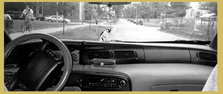

|
"101 DEGREE CABIN FEVER" Dirk Stratton: Since this interview is for TIR Web, William, let's discuss your relationship with electronic literature. If I'm not mistaken, when I first met you, you were rather dismissive of electronic literature. Since then you've become well-versed in the use of computers, you make your living as a webmaster, you've done freelance work for an organization that promotes electronic literature, you've contributed articles to e-critizines (at least one of which was composed in hypertext) aas well as an article about e-lit for a special issue of Poets & Writers, you've been the author or co-author of several "literary" hypertexts, some of which have won or almost won awards, and finally, you've started an independent publishing house hich has as one of its missions the promotion and sale of electronic literature. Is my summary of the issue in question accurate, William? Has your relationship with electronic literature changed? Do you have a future together? William Gillespie: Dirk, you exaggerate. Before ever adhering the notion electronic to the notion of literature, back in 1996, when we were still calling it hypertext, I composed a Webwork entitled Table of Forms. What I suppose is bothersome is the thought that the adjective electronic might change the value of the noun literature. Let's make some practical distinctions: The electronic text editor facilitates revision and replication. The Internet facilitates research and collaboration, and as a distribution method outrivals any other. Electronic literature can incorporate extensive texts, automation, sound, and color without significant added expense. Paper and ink is (still) a superior platform for extended reading, precise and stable design, intimacy, and context (you can encounter paper anywhere but with electronic literature the context is almost always a computer). Electronic publishing is less expensive than print. I don't know which is worse for the environment: books powered by electricity or books made of harvested trees. And we won't know which is more enduring within our lifetimes: we were both born before the desktop computer existed and we were in grad school when the Web became ordinary. But the book has been around for centuries.
DS: William, this campground reminds me of a series of nature poems called "laiku" that I wrote years ago. Thinking about laiku made me want to write one. So I did. Here it is. a
slice of moon
low
on
the horizon
at first
pumpkin-
orange
but even
when
orange
not an orange slice
but a
slice of lemon
escap
-ing the ice tea
which becomes clearer
as paler
it climbs
Specks of light ripple on a black pond
Fireflies move in the darkness
Orchestral orgy
Some dance some carve
A distant flicker of almostlightning
Troubles the stratosphere
Night exhales cool shooting stars
Ice
Bowl of woods
William Gillespie’s writing is: A)___________________________________________________ B)___________________________________________________ C)___________________________________________________ D)___________________________________________________ E) All of the above. A) Marr/ked by formal experimentation B) Leaks utopian yearning C) Worthy of criticism D) Not always funny
Among your many friends and admirers, you are famous for writing assignments. What’s the latest assignment you’ve come up with? WG: The latest assignment I’ve come up with? Well, while we were listening to the Resident’s Commercial Album during the 30-lines-in-30-minutes writing exercise two nights ago, I jotted down the following idea, based conceptually on the Fibonacci Sequence: Write a poem in which every line uses one word from each of the two previous lines of the poem. For a touch of class, of course, you could make the first line contain one word from each of the last two lines. There’s all kinds of fun you can have writing! DS: What assignment do you use most frequently? WG: The exercise I use the most frequently is the 30-minute freewrite. The rule of the 30-minute freewrite is this: write for 30 minutes. If you are having trouble writing, write at least 1000 words. DS: What’s your favorite writing assignment of all time? WG: 20-Consonant Poetry. DS: Give us a short history of how you came to be enamored of such things. WG: A publication in purple mimeograph, stapled in the top left corner, entitled Poetry by the Fourth Grade. I had writer’s block until I was 8, Mrs. Keith helped me out of it. DS: Why do you like the Oulipo? WG: To me the Oulipo is devoid of mystique: it is set up to make its ideas as easy-to-steal as possible, even across different languages. DS: Who is your favorite poet? Why? WG: My favorite poet is Jackson Mac Low, because he usually has a formal idea, the formal idea is usually new, and he usually explains it. He is devoid of mystique, a human laboratory openly conducting valuable poetic research. DS: Who is your favorite fiction writer? Why? WG: My favorite fiction writer is Italo Calvino, whose works also tend to have distinct ideas. Although most of his books are composed of short stories, they are story cycles, rather than anthologies. His books are concept albums. DS: What are your favorite poems and your favorite fictions? WG: The Hunting of the Snark, Bad History, Imagine the Angels of Bread, The Orangery, What the President Will Say and Do, Suttree, Hopscotch, Wittgenstein’s Mistress, Angels, Tripticks, Metempsychosis, Proofs, Dog Soldiers. DS: Who is your favorite painter? WG: Remedios Varo. DS: What’s your favorite poetry movement? If you were to start a movement, what would it be called and what would its manifesto include? WG: 20-Consonant Poetry. DS: What role does music play in your writing? WG: Songs are central to my understanding of language. Symphonies inspire larger architectures. Experimental music foregrounds new formal ideas: efforts to follow rules yet unrecognizable to the ear. 20-Consonant Poetry, for example, was an idea translated from 12-Tone Music. Plus you gotta dance. DS: Tell us the story behind The Story That Tells You How To Write It. What experiments were you testing in that laboratory? WG: In TSTTYHTWI, I was trying to formally structure various elements of a short story. Rather than just "write from the gut" or "put the characters in a room together and see what they do," I composed a score and then performed it onto paper. With overdubbing. The finished product was a book with a story recto and an essay verso. One of the methods I used to structure the story was to define the characters' personalities by mapping the metaphors that were central to their understanding of the world. For example, one character understands a monogamous relationship as freedom, while another understands it as confinement. DS: William, you take material from your life, from heart-rending breakup to the most mundane stop for gas at a dying gas station...
...and turn it into literature. I know you have many projects in progress, and that you continue to think up new ones all the time. Describe the project you're most desirous of completing. What's the problem? Anything we can do?  WG: Keyhole Factory. Let me use your house or cabin, give me feedback on my drafts, help Spineless Books, smile, write. DS: Explain why you like to collaborate so much. What is your philosophy of collaboration? WG: Like creative expression through language, social interaction is a basic human need. My philosophy of collaboration is that, if I like solution A, and you like solution B, and we have reasons for our preferences (other than pride or stubbornness), then we can take those reasons and find solution C, which neither of us would have figured out on our own. Credit collaborators equally by default. The method of collaboration is more important than the talent or prestige of the individuals involved. Collaboration can be fun, like a party or vacation or camping trip—it can be done with a celebratory and decadent flair. I am hesitant to collaborate with someone I have never met in person. Collaboration is friendly or else employment. DS: Tell us a little about Spineless Books and what you hope to accomplish as a publisher. WG: Spineless Books is an independent publishing house dedicated to the production and distribution of innovative literature in print and electronic forms with an emphasis on collaboration, formal experimentation, and utopian thought. We hope to publish good writing for the next decade or three. |